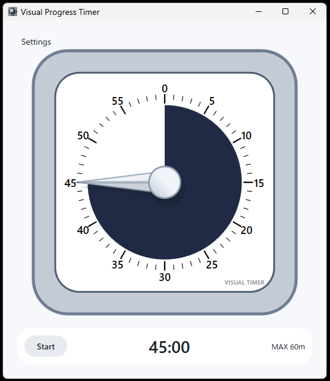
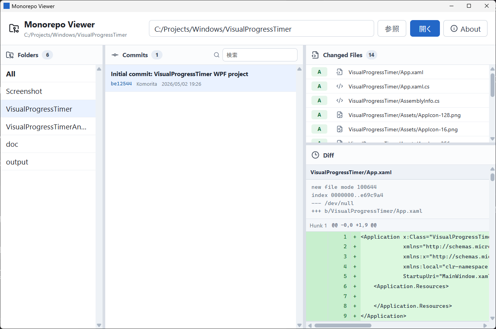
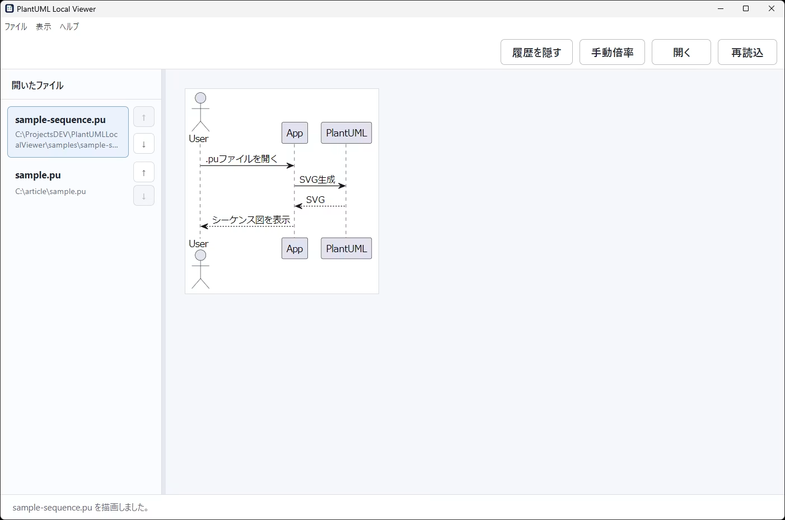

Windows Apps
C# / .NET で開発したWindowsデスクトップアプリケーション一覧です。
Komic Viewer
軽量で使いやすいコミック・マンガビューアー
作成の経緯・開発ストーリーを読む
作成の経緯
ローカルに保存した多くのアーカイブを、ストレスなく、なおかつ「めくる」感覚を大切にしながら閲覧できるツールが欲しくて開発しました。多機能さよりも、起動の速さと直感的な操作感にこだわっています。
うーん...WindowsアプリをAIでやってみたかった...作れるようになってるな
KiroでWindowsアプリを作る検証のためにそこそこ複雑なアプリを作ろうと思って作ってみました。慣れているのでWindowsフォームにしたのですが指示が悪かったためUI部分をコードで実装する作りになってしまいVisual Studio 2026 communityのデザイナーの利点がなくなってしまいました。しかしKiroのみでWindowsアプリが作れることが証明できたので良しとします。
主な機能・特徴を見る
- 多彩な表示モード: 単ページ・見開き表示に対応
- 豊富な対応形式: ZIP, RAR, CBZ, CBR形式をサポート
- 多彩な画像形式: JPEG, PNG, GIF, BMP, WebP, AVIFに対応
- テーマ切り替え: ライト・ダークテーマ対応
- 直感的操作: マウス・キーボード・ホイール・ツールバースクロールバーでの快適なナビゲーション
- フルスクリーン対応: 自動非表示ツールバー付きで集中して読書を楽しめる
- 最前面表示: 他のウィンドウの上に常に表示可能
- ドラッグ&ドロップ: ファイルを簡単に開ける

Visual Progress Timer
残り時間を時計の文字盤上の色付きエリアで直感的に把握できる、ビジュアルタイムタイマー風のWindowsデスクトップアプリです。デジタル表示を読まなくても、一目で進捗が分かります。Android版も同リポジトリに収録されています。
作成の経緯・開発ストーリーを読む
作成の経緯
一つのことに集中しすぎると時間を忘れてしまうことがよくあって、物理的なビジュアルタイマーが欲しいなと思っていました。購入しようと調べていたのですが、「これ、作れるんじゃないか」と思い立って自分で作ることにしました。
買うより作る
どうせなら自分好みにカスタマイズできるほうがいい。カラーテーマやフローティングモードなど、物理タイマーにはない機能も盛り込めました。
主な機能・特徴を見る
- 60分対応ビジュアルタイマー: 残り時間を色付きエリアで視覚的に表示
- 直感的な操作: 文字盤をドラッグして1〜60分の範囲で時間を設定
- マウスホイール調整: 1分単位の微調整が可能
- タイムアップ通知: アラーム音で時間切れをお知らせ
- カラーテーマ: タイマー面・フレームの色をカスタマイズ
- ライト／ダークモード: 環境に合わせて切り替え可能
- 最前面表示: 常に手前に表示するモード
- フローティングモード: タイマーのみのミニマル表示

KoClip2
クリップボードにコピーされた画像を自動的に指定フォルダに保存するWindows用ツール。.NETで完全再実装され、Webp保存やグレースケール変換に対応。
作成の経緯・開発ストーリーを読む
作成の経緯
技術資料の作成や開発中の画面記録の際、スクリーンショットを「撮って、保存して、名前をつける」という繰り返しに煩わしさを感じていました。コピーした瞬間に裏側で自動保存されるワークフローを構築するために開発しました。
Delphiからのコンバート...イケるんだ...
Kiroで以前作成していたDelphiのアプリをC#にコンバートができるかの検証のために作成してみました。一度作成したアプリを別の言語で作成するのは、なかなか腰が重くなってたのでAIの助けを借りていい機会だと思いやってみました。結果いけました。しかし...ここでも問題が...今回も指示が悪くまたUI部分をコードで実装する作りになってしまいVisual Studio 2026 communityのデザイナーの利点がなくなってしまいました。UIがモダンなのはうそですWindowsFormで昔な感じです(💦)
主な機能・特徴を見る
- 自動画像保存: クリップボード監視で画像を自動保存
- 多彩な形式: BMP, JPEG, PNG, WebPに対応
- 柔軟な設定: 保存先やファイル名、品質設定を自由にカスタマイズ
- モダン機能: グレースケール変換、Windows 11対応UI、サウンド通知
KoThumb2
大量の画像をドラッグ＆ドロップで素早くリサイズ・変換するためのデスクトップアプリ。SNS投稿やブログ作成に最適な、高速・高品質な画像処理ツールです。
作成の経緯・開発ストーリーを読む
作成の経緯
大量の画像をリサイズする際、既存のツールでは処理が遅かったり、設定が複雑だったりすることがありました。「フォルダを投げ込むだけで終わる」という究極のシンプルさと、マルチコアを活かした爆速な処理スピードを両立させるために開発しました。
Delphiからのコンバートより最初から作ったほうが早いという...矛盾...
以前作成していたDelphiのアプリを新規でAntiGravityを使ってC#のWindowsアプリを作成してみました。仕様は以前のアプリの仕様そのままで、今回はC#で作成したい、作成後VisualStudio2026での編集を考慮してデザイナで変更できるようにしてほしいと指示しました。Kiroと違って仕様を決めて作成してもらいました。一番驚いたのはスピードでKiroに比べてめちゃくちゃ早かったです。
主な機能・特徴を見る
- とにかく高速: マルチコアCPUをフル活用した並列処理
- きれいに縮小: ImageSharp採用でボケの少ない高品質リサイズ
- 多彩な設定: 幅・高さ・長辺基準のリサイズとWebP/JPG/PNG変換
- かしこい機能: 柔軟なリネームルール、サブフォルダ構造の維持
- 使いやすさ: 最前面表示、処理ログからの即時プレビュー対応

KoThumb Mini
究極にシンプルな画像一括リサイズ・変換ツール。「フォルダを指定する」という手間さえも削ぎ落とし、デスクトップの隅に置いて「落とすだけ」で使えるミニマルなツールです。
作成の経緯・開発ストーリーを読む
作成の経緯
KoThumb2よりもさらに手軽に、直感的にリサイズを行いたくて開発しました。設定画面を開く手間すら惜しいとき、あらかじめ決めた設定で「ポイッ」と画像を投げるだけで完了する。そんな日常の動作に溶け込むツールを目指しました。
KoThumb2からの引き算、そしてデザインへのこだわり
KoThumb2を作った後、もっとシンプルにできるんじゃないかと思い、機能を削ぎ落としてUIを磨き上げました。今回はWPFを採用し、グラスモーフィズム（半透明のぼかし）を取り入れたモダンな外観に仕上げています。機能は最小限ですが、その分「迷わない」快適さがあります。
主な機能・特徴を見る
- 究極のシンプルさ: ウィンドウに画像をドロップするだけで即座に処理開始
- 美しくモダンなUI: ダークモードとグラスモーフィズムを採用したスタイリッシュな外観
- 高速並列リサイズ: .NET 9.0とImageSharpによる軽快な動作
- 自動保存: 元ファイルの隣に resized フォルダを自動生成して保存
- 設定不要の快適さ: 迷わせないための「引き算」の設計

KoFolderSync
シンプルで使いやすいフォルダ同期アプリケーション。ソースフォルダから同期先フォルダへファイルを効率的にコピーし、オプションで完全同期（ミラーリング）も可能です。
作成の経緯・開発ストーリーを読む
作成の経緯
バックアップや複数のフォルダを同期する際、既存のツールでは設定が複雑だったり、シンプルな操作で素早く同期できるツールが欲しくて開発しました。ドラッグ&ドロップ対応で直感的に使え、並列処理による高速同期を実現しています。
スクリプトでもよかったけどWindowsアプリにしてみた
必要に迫られて作成、VisualStudio2026,Kiro,Antigravityを交互に使っても破綻しないのか検証も行う。VisualStudio2026で作成した日本語のコメントやREADME.mdがKiro,Antigravityで開くと文字化け？してしまっていた。結局途中からVisualStudio2026を使うのをやめ、Kiro,Antigravityで開発を行った。
主な機能・特徴を見る
- 高速並列処理: マルチスレッドで効率的にファイルをコピー
- 完全同期モード: ミラーリングで同期先を完全一致させる
- ドラッグ&ドロップ: フォルダを簡単に設定可能
- 途中停止機能: 同期を安全に中断できる
- 設定の自動保存: 前回の設定を記憶して再利用
- 詳細なログ: 進捗状況とエラーを確認できる

Image Explorer
Windowsエクスプローラー風のインターフェースで画像を快適に閲覧できる高速イメージビューアー
作成の経緯・開発ストーリーを読む
作成の経緯
エクスプローラーでも画像は見れるけど、もっと快適に閲覧できるツールが欲しくて作成しました。非同期読み込みやキャッシュ機能で大量の画像もスムーズに表示。直感的なUIで操作も簡単です。
うーん...新しい技術スタックだとWindowsアプリはきついかも
C#14, WPF, CommunityToolkit.Mvvmを使ってもAIで開発できるかやってみたかった。WindowsFormより引っかかった感じです。どうにもならない感じになって解決するのに...デバッグの考え方や、ログ出して確認する方法まで指示必要がありましたがなんとか山を越えた感じです。最初AntiGravityで作成し大枠は終了、クレジットがなくなったのでその後動くようにするまではKiroを使って作業しました。正直、CommunityToolkit.Mvvmって初めて知りました。
主な機能・特徴を見る
- 多様な画像フォーマット: JPEG, PNG, GIF, BMP, WebP, TIFF対応
- 高速表示: 非同期読み込みとキャッシュで快適な閲覧
- 使いやすいUI: エクスプローラー風の3ペイン構成
- 豊富なズーム機能: 実寸、フィット、幅/高さ合わせなど
- キーボードショートカット: 効率的な操作が可能
- サムネイル表示: 画像の一覧を素早く確認

KoReadingABook
読書中や離席中にPCがスリープしたり、チャットツールのステータスが「離席中」になったりするのを防ぐために開発しました。マウスの自動移動と定期的なウィンドウ切り替えにより、人が操作している状態をシミュレートします。
作成の経緯・開発ストーリーを読む
作成の経緯
物理的にマウスを動かすデバイスもありますが、ソフトウェアでスマートに解決したくて作りました。シンプルな操作で、PCがアクティブな状態を保つことができます。
本をゆっくり読みたいだけなんだ...
シンプルながらも実用的なツールです。
主な機能・特徴を見る
- ランダムウィンドウ切り替え: 10〜30秒間隔で開いているアプリをランダムにアクティブ化
- スマートな選択: 現在のアプリとは異なるアプリを選択、設定画面などは除外
- マウス自動移動: 画面中央付近で円を描くように自動移動
- ユーザー操作優先: マウスを動かすと10秒間自動移動を一時停止
- 簡単操作: Start/Stopボタンで即座に制御可能
- カスタマイズ可能: ウィンドウ切り替え間隔を調整可能

KoScreenPresenterAssist
プレゼンテーションや画面共有時に便利な描画・強調表示ツール。画面上に直接描画したり、マウスカーソルを強調・拡大したりすることで、視覚的な説明をサポートします。
作成の経緯・開発ストーリーを読む
作成の経緯
リモート会議や動画制作の際、「画面のどこを指しているのか」を相手により分かりやすく伝えたいという思いから開発しました。シンプルで邪魔にならないツールバーと、瞬時に切り替えられるホットキーで、プレゼンの流れを止めずに使用できます。
プレゼン中に「ここ」を強調したい...
画面共有中にマウスカーソルが見失われがちだったので、強調表示や直接書き込みができるツールを作ってみました。ツールバーの半透明処理やホットキーの設定など、細かいところもいい感じに仕上がりました。
主な機能・特徴を見る
- 描画モード: 線や円で画面上に直接書き込み可能（4色対応）
- 強調表示モード: カーソル周辺をスポットライトのように強調
- 拡大鏡モード: カーソル周辺をリアルタイムに拡大表示
- フローティングツールバー: 邪魔にならない場所に配置・移動可能
- ホットキー対応: Ctrl+Alt+P/H/Z で瞬時にモード切り替え
- 全消去機能: Escキー一発、またはゴミ箱アイコンですべてクリア

Redmine Time Tracker
Redmineの作業時間入力、もっと楽にしませんか？毎日の作業時間記録を効率化・自動化するためのデスクトップアプリケーションです。
作成の経緯・開発ストーリーを読む
作成の経緯
以前は、Pythonスクリプトを使ってコマンドラインから時間入力を自動化していました。しかし、実際に使ってみると、登録状況が一目で分からない、どの日に登録したか確認が面倒、コマンドライン操作が直感的ではないといった課題がありました。
GUIアプリへの進化...これだよこれ！
カレンダー表示と視覚的な操作ができるGUIアプリケーションを開発しました。結果、月全体の登録状況が一目で分かり、マウスで簡単に操作できるようになりました。登録漏れもすぐに発見できるので、日々の記録作業が劇的に快適になりました。WPFでのモダンなUI実装も、AIの助けを借りることで驚くほどスムーズに進みました。
主な機能・特徴を見る
- 月次カレンダービュー: 1ヶ月の作業記録をカレンダー形式で視覚的に把握
- テンプレート一括登録: 毎日・毎週の定例タスクをワンクリックで一括登録
- モダンなUI: Windowsの最新トレンドを取り入れたシンプルで美しいデザイン
- 透明性のあるログ: APIリクエストの内容を確認できるログビューア搭載
- 子チケット一括作成: 階層構造（親子関係）を維持したチケットの一括作成に対応
- 幅広いRedmine対応: Redmine 3.0以降の各バージョンに対応（REST API必須）
KoMDViewer
【公開一時停止中】
AI（Antigravity）による WinUI 3 アプリ開発の検証として制作し、当初の目的である「AIのみでの開発完遂」を達成したため、現在は公開を停止しております。開発実績として掲載を継続しています。
WinUI 3 と Mica 背景を採用した、シンプルで美しい Markdown ビューアー ＆ エディター。軽量な動作と高品質なレンダリングで、快適な文章作成体験を提供します。
作成の経緯・開発ストーリーを読む
作成の経緯
「サッと開いて、きれいに読めて、少しだけ直したい」そんな日常の Markdown 操作をストレスなく行えるツールが欲しくて開発しました。機能過多にならず、美しさと使い勝手のバランスを追求しています。
WinUI 3 の美しさを活かしたい...
Antigravity を使って、最新の WinUI 3 フレームワークで開発しました。Mica 効果（背景の半透明処理）やモダンなコントロールをフル活用し、Windows 11 に最適化された外観に仕上げています。コードエディター部分には CodeMirror 6 を採用し、ブラウザベースの柔軟性とデスクトップアプリの軽快さを両立させました。
主な機能・特徴を見る
- モダンな外観: WinUI 3 + Mica 効果による洗練されたデザイン
- 高品質レンダリング: Markdig と highlight.js による美しい表示
- 直感的なエディター: CodeMirror 6 を搭載し、表示・編集をスムーズに切り替え
- PDF 出力: 表示内容をそのまま高品質な PDF としてエクスポート
- 快適な操作性: ドラッグ＆ドロップ対応、最近開いたファイルの履歴管理
- テーマ対応: システム設定に連動したライト・ダークテーマ切り替え

Monorepo Viewer
大規模なローカルリポジトリの Git 履歴をフォルダ単位で素早く確認できる、デスクトップ GUI ツール。モノレポ構成のプロジェクトで、特定フォルダの変更履歴だけを絞り込んで追跡するのに最適です。
作成の経緯・開発ストーリーを読む
作成の経緯
モノレポ構成のリポジトリでは、全体の git log を見ても目的のフォルダの変更が埋もれてしまいます。「このフォルダだけの履歴をサッと確認したい」という日常の不満を解消するために開発しました。
Tauri + Rust + React という新しい組み合わせ
デスクトップアプリのバックエンドに Rust、フロントエンドに React + TypeScript、シェルに Tauri v2 という構成で開発しました。Git 操作はローカルの git CLI を呼び出す形で実装しており、軽量かつシンプルな設計になっています。
主な機能・特徴を見る
- リポジトリ全体の履歴表示: All モードでリポジトリ全体のコミット履歴を一覧表示
- フォルダ別履歴の絞り込み: ルートフォルダを選択して git log -- <folder> 形式で履歴をフィルタリング
- 変更ファイルの確認: コミットを選択して変更されたファイル一覧を表示
- 差分ビューアー: ファイルを選択してファイル単位の diff を表示（追加・削除の色分け対応）
- リサイズ可能なパネル: フォルダ・コミット・変更ファイル・diff の各パネルを自由にリサイズ
- 軽量設計: ローカルの git CLI を活用したシンプルなアーキテクチャ

PlantUML Local Viewer
.pu / .puml ファイルをローカルで開いて PlantUML のシーケンス図を表示する、オフライン完結型のデスクトップビューアーです。PlantUML ソースを外部サーバーに送らず、PC内で SVG に変換します。
作成の経緯・開発ストーリーを読む
作成の経緯
業務で PlantUML のシーケンス図を扱う機会が多かったのですが、オンラインのレンダラーに業務情報を含むソースを貼り付けるのは避けたい、ローカルで完結するシンプルなビューアーが欲しい、という思いから開発しました。エディタを開かなくても、ファイルをダブルクリックするような感覚で図を確認できることを目指しています。
Electron + 同梱 JRE で「インストール不要」を実現
PlantUML JAR と JRE をアプリに同梱することで、配布先 PC に Java や PlantUML を別途インストールする必要のないポータブル EXE として配布できる構成にしました。履歴ペインや拡大縮小、ペイン幅調整など、日常の使い勝手にこだわった作りになっています。
主な機能・特徴を見る
- ローカル完結: PlantUML ソースを外部送信せず PC 内で SVG 変換
- 幅広い拡張子対応: .pu / .puml / .plantuml / .iuml に対応
- ドラッグ&ドロップ: ファイルを放り込むだけで開ける
- 履歴ペイン: 開いたファイルを左ペインに保存、クリックで切り替え・並べ替え可能
- 柔軟な表示: 幅に合わせる / 手動倍率の切り替え、Ctrl + ホイールで拡大縮小
- 断片の自動補完: @startuml / @enduml がない短い断片も自動で描画
- ポータブル EXE: JRE 同梱で、Java や PlantUML のインストール不要
